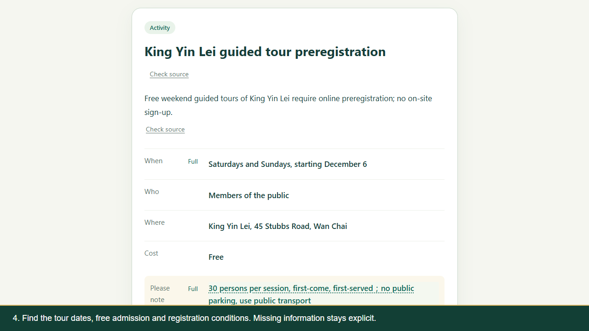
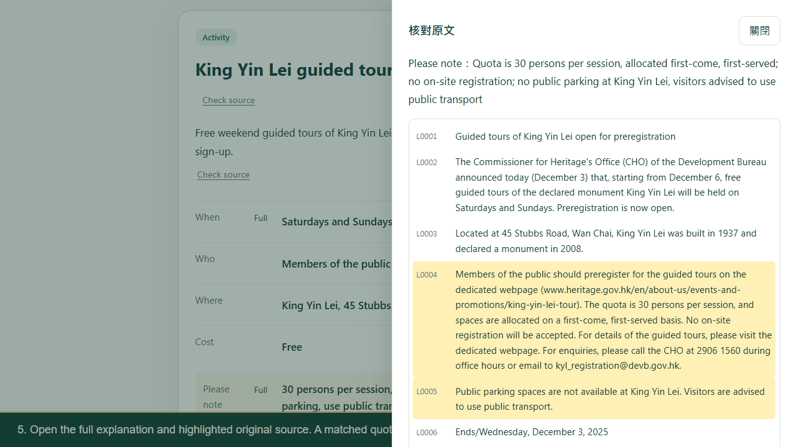

ClearNotice HK
Community notices, made clear.
See how a public notice becomes an action card with its original source close at hand.
Our product in action
We recorded this demo on 17 October 2026. The web application makes a real model request. The extension then shows the same saved result. English narration and captions guide you through each step. Screen playback runs at the labelled 1.3× speed.
We use a historical notice dated 3 December 2025 to demonstrate the product. Please check the original source for current booking information.
The main card

Find the relevant dates, audience, location and cost. Detailed conditions remain available.
The original source

Open the full explanation alongside the highlighted source to check what a condition means.
What we built
ClearNotice HK reads public webpage text or pasted notices and creates action cards in Traditional Chinese or English. Readers can open full explanations, check source evidence, and copy or print the result. We also built an extension interface that connects to a local backend.
The current version supports text input. PDF and image reading are future work. The model can still make mistakes, so confirm important dates, costs and eligibility with the original notice.